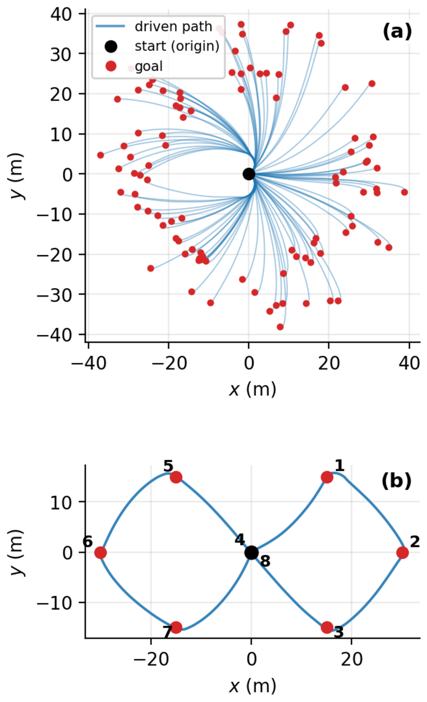

High-fidelity simulators like Project Chrono give you the physics to evaluate a controller, but not the throughput to find one. We distill Chrono into a task-specific neural reduced dynamics model (NN-ROM), train the policy entirely inside the frozen model, and send it back to Chrono for closed-loop validation. The question the paper answers is not how to compress state, but what a learned model should keep, receive, reconstruct, and omit so that it is both fast and useful for control.

Study Case I — one policy, three terrains
Three tracking policies, identical in every way except the frozen dynamics model they were trained inside, driven closed-loop in Chrono. Green is the reference, red the driven path. Pick a terrain:
The generalist wins on every terrain — including the one it never saw
Closed-loop Chrono XY RMSE over 20 held-out references per terrain, all 20/20 rollouts completing. The mixture generalist takes the lowest median and mean in all three regimes: it beats the rigid-only specialist on rigid ground and the CRM-only specialist on CRM soil, on their own home terrain. Bumpy is a strict zero-shot test — no bumpy data enters training, checkpoint selection, normalization, or reward tuning, and bumpy carries the same rigid context code as flat.

| Terrain | Policy | Median | Mean |
|---|---|---|---|
| Rigid flat | Generalist | 0.157 | 0.184 |
| Rigid-only | 0.174 | 0.219 | |
| CRM-only | 0.232 | 0.259 | |
| CRM soil | Generalist | 0.180 | 0.249 |
| Rigid-only | 0.854 | 1.000 | |
| CRM-only | 0.231 | 0.361 | |
| Rigid bumpy† | Generalist | 0.149 | 0.229 |
| Rigid-only | 0.187 | 0.238 | |
| CRM-only | 0.213 | 0.418 |

Why context, not just capacity
The same reduced state and action evolve differently on rigid ground than on deformable soil, so the reduced dynamics are ambiguous without a regime label. A two-class one-hot code appended to each input token resolves it. Removing that code barely moves one-step loss — but more than doubles open-loop rollout error on rigid terrain, 3.73% → 8.26%. History alone does not preserve the rigid/CRM distinction over a long rollout.
Study Case II — same pipeline, two very different abstractions
One M113 tracked platform with a front-mounted 4-DOF arm, driven by two independent tasks. The base keeps a 3-D planar state [vx, vy, r] and integrates its pose outside the network. The arm keeps an 8-D joint state [q, q̇], with the end-effector recovered by forward kinematics rather than learned as a channel. Dimension is a consequence of the dominant physics, not the design target.


Throughput is what makes the loop interactive
Real-time factor is simulated seconds advanced per wall-clock second. CRM soil is the dominant Chrono cost — ~14.1M SPH particles and a 4× smaller step — so a 15 s episode takes ~100 s of wall clock. The surrogate that replaces it runs at 1,750× real time batched on one GPU. The payoff is not one converged run; it is the reward-shaping and tuning iterations you can afford before it.
| Configuration | Real-time factor | Cost vs. its NN-ROM |
|---|---|---|
| Chrono — HMMWV, rigid flat | 7.31× | 239× |
| Chrono — HMMWV, bumpy rigid | 6.65× | 263× |
| Chrono — HMMWV, CRM soil | 0.152× | 11,500× |
| NN-ROM — terrain-conditioned HMMWV‡ | 1,750× | 1× |
| NN-ROM — tracked base‡ | 16,300× | 1× |
| NN-ROM — arm‡ | 2,320× | 1× |
‡ NN-ROM rows are aggregate batched-GPU figures across the parallel rollouts used during PPO training; Chrono rows are single-process, single-stream (one Intel 14900KF). Measured simulated-time throughput ratios reach ≈11,500× (CRM), ≈58,400× (tracked base), and ≈8,300× (arm).
What makes an abstraction the right one
Follow the dominant physics
The HMMWV needs tire normal loads and wheel speeds because tire–terrain interaction decides whether it holds a line. The base needs three planar velocities. The arm needs joint positions and rates. Different in kind, not just in count.
Don't learn what you can derive
Global pose is integrated from predicted velocities; the end-effector is FK(q); contact clearance is geometric. Reduction discards redundancy, not fidelity.
Add context only where ambiguous
A two-class terrain code where rigid and deformable dynamics diverge — nothing more. One backbone then shares what the regimes have in common.
Judge by transfer, not by loss
One-step error is necessary and insufficient; a policy can farm reward from a surrogate's mistakes. Closed-loop Chrono is the exam.
BibTeX
@article{zhang2026abstraction,
title = {Learning the Right Abstraction: Neural Reduced Dynamics for
Complex Robot Control},
author = {Zhang, Harry and Negrut, Dan},
journal = {Preprint},
year = {2026}
}